Title Page
Contents
1. Introduction
2. Key Idea
3. Root finding in one dimension
4. Linear equations
5. Numerical integration
6. First order ordinary differential equations
7. Higher order ordinary differential equations
8. Partial differential equations
Consider the Laplace equation in two dimensions
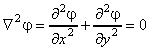 , | (101) |
in some rectangular domain described by x in [x0,x1], y in [y0,y1]. Suppose we discretise the solution onto a m+1 by n+1 rectangular grid (or mesh) given by xi = x0 + iDx, yj = y0 + jDy where i=0,m, j=0,n. The mesh spacing is Dx = (x1-x0)/m and Dy = (y1-y0)/n. Let ij = (xi,yj) be the exact solution at the mesh point i,j, and Fij =~ ij be the approximate solution at that mesh point.
By considering the Taylor Series expansion for about some mesh point i,j,
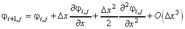 , | (102a) |
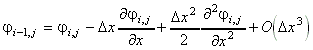 , | ( 102 b) |
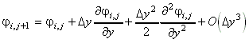 , | ( 102 b) |
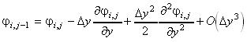 , | ( 102 b) |
it is clear that we may approximate 2j/x2 and 2j/y2to the first order using the four adjacent mesh points to obtain the finite difference approximation
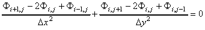 | (103) |
for the internal points 0<i<m, 0<j<n. In addition to this we will have either Dirichlet, von Neumann or mixed boundary conditions to specify the boundary values of ij. The system of linear equations described by ( 103 ) in combination with the boundary conditions may be solved in a variety of ways.
Provided the boundary conditions are linear in , our finite difference approximation is itself linear and the resulting system of equations may be solved directly using Gauss Elimination as discussed in section4.1 . This approach may be feasible if the total number of mesh points (m+1)(n+1) required is relatively small, but as the matrix A used to represent the complete system will have [(m+1)(n+1)]2 elements, the storage and computational cost of such a solution will become prohibitive even for relatively modest m and n.
The structure of the system ensures A is relatively sparse, consisting of a tridiagonal core with one nonzero diagonal above and another below this. These nonzero diagonals are offset by either m or n from the leading diagonal. Provided pivoting (if required) is conducted in such a way that it does not place any nonzero elements outside this band then solution by Gauss Elimination or LU Decomposition will only produce nonzero elements inside this band, substantially reducing the storage and computational requirements (see section4.4 ). Careful choice of the order of the matrix elements (i.e. by x or by y) may help reduce the size of this matrix so that it need contain only O(m3) elements for a square domain.
Because of the wide spread need to solve Laplace's and related equations, specialised solvers have been developed for this problem. One of the best of these is Hockney's method for solving Ax = b which may be used to reduce a block tridiagonal matrix (and the corresponding right-hand side) of the form
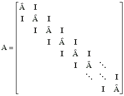 , | (104) |
into a block diagonal matrix of the form
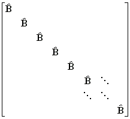 , | (105) | |
where
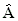
and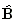
are themselves block tridiagonal matrices and I is an identiy matrix.. This process may be performed iteratively to reduce an n dimensional finite difference approximation to Laplace's equation to a tridiagonal system of equations with n-1 applications. The computational cost is O(p log p), where p is the total number of mesh points. The main drawback of this method is that the boundary conditions must be able to be cast into the block tridiagonal format.An alternative to direct solution of the finite difference equations is an iterative numerical solution. These iterative methods are often referred to as relaxation methods as an initial guess at the solution is allowed to slowly relax towards the true solution, reducing the errors as it does so. There are a variety of approaches with differing complexity and speed. We shall introduce these methods before looking at the basic mathematics behind them.
The Jacobi Iteration is the simplest approach. For clarity we consider the special case when Dx = Dy. To find the solution for a two-dimensional Laplace equation simply:
| (106) | |
The coefficients in the expression (here all 1/4) used to calculate the refined estimate is often referred to as the stencil or template. Higher order approximations may be obtained by simply employing a stencil which utilises more points. Other equations (e.g. the bi-harmonic equation, 4Y = 0) may be solved by introducing a stencil appropriate to that equation.
While very simple and cheap per iteration, the Jacobi Iteration is very slow to converge, especially for larger grids. Corrections to errors in the estimate Fij diffuse only slowly from the boundaries taking O(max(m,n)) iterations to diffuse across the entire mesh.
The Gauss-Seidel Iteration is very similar to the Jacobi Iteration, the only difference being that the new estimate F*ij is returned to the solution Fij as soon as it is completed, allowing it to be used immediately rather than deferring its use to the next iteration. The advantages of this are:
On the other hand, the method is less amenable to vectorisation as, for a given iteration, the new estimate of one mesh point is dependent on the new estimates for those already scanned.
A variant on the Gauss-Seidel Iteration is obtained by updating the solution Fij in two passes rather than one. If we consider the mesh points as a chess board, then the white squares would be updated on the first pass and the black squares on the second pass. The advantages
It has been found that the errors in the solution obtained by any of the three preceding methods decrease only slowly and often decrease in a monotonic manner. Hence, rather than setting
for each internal mesh point, we use
| (107) | |
for some value s. The optimal value of s will depend on the problem being solved and may vary as the iteration process converges. Typically, however, a value of around 1.2 to 1.4 produces good results. In some special cases it is possible to determine an optimal value analytically.
The big problem with relaxation methods is their slow convergence. If s = 1 then application of the stencil removes all the error in the solution at the wave length of the mesh for that point, but has little impact on larger wave lengths. This may be seen if we consider the one-dimensional equation d2/dx2 = 0 subject to j(x=0) = 0 and j(x=1) = 1. Suppose our initial guess for the iterative solution is that Fi = 0 for all internal mesh points. With the Jacobi Iteration the correction to the internal points diffuses only slowly along from x = 1.
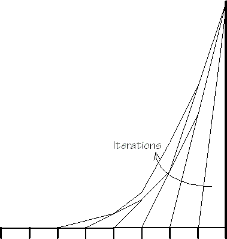
Multigrid methods try to improve the rate of convergence by considering the problem of a hierarchy of grids. The larger wave length errors in the solution are dissipated on a coarser grid while the shorter wave length errors are dissipated on a finer grid. for the example considered above, the solution would converge in one complete Jacobi multigrid iteration, compared with the slow asymptotic convergence above.
For linear problems, the basic multigrid algorithm for one complete iteration may be described as
Typically the relaxation steps will be performed using Successive Over Relaxtion with Red-Black ordering and some relaxation coefficient s. The hierarchy of grids is normally chosen to differ in dimensions by a factor of 2 in each direction. The factor a is typically less than unity and effectively damps possible instabilities in the convergence. The refining of the correction to a finer grid will be achieved by (bi-)linear or higher order interpolation, and the coarsening may simply be by sub-sampling or averaging the error vector r.
It has been found that the number of iterations required to reach a given level of convergence is more or less independent of the number of mesh points. As the number of operations per complete iteration for n mesh points is O(n)+O(n/2d)+ +O(n/22d)+…, where d is the number of dimensions in the problem, then it can be seen that the Multigrid method may often be faster than a direction solution (which will require O(n3), O(n2) or O(n log n) operations, depending on the method used). This is particularly true if n is large or there are a large number of dimensions in the problem. For small problems, the coefficient in front of the n for the Multigrid solution may be relatively large so that direct solution may be faster.
A further advantage of Multigrid and other iterative methods when compared with direct solution, is that irregular shaped domains or complex boundary conditions are implemented more easily. The difficulty with this for the Multigrid method is that care must be taken in order to ensure consistent boundary conditions in the embedded problems.
In principle, relaxation methods which are the basis of the Jacobi, Gauss-Seidel, Successive Over Relaxation and Multigrid methods may be applied to any system of linear equations to interatively improve an approximation to the exact solution. The basis for this is identical to the Direct Iteration method described in section3.6 . We start by writing the vector function
| (108) |
and search for the vector of roots to f(x) = 0 by writing
| (109) |
where
| (110) | |
with D a diagonal matrix (zero for all off-diagonal elements) which may be chosen arbitrarily. We may analyse this system by following our earlier analysis for the Direct Iteration method (section3.6 ). Let us assume the exact solution is x* = g(x*), then
From this it is clear that convergence will be linear and requires
| (111) |
where B = D1[A+D] for some suitable norm. As any error vector en may be written as a linear combination of the eigen vectors of our matrix B, it is sufficient for us to consider the eigen value problem
| (112) |
and require max(|l|) to be less than unity. In the asymptotic limit, the smaller the magnitude of this maximum eigen value the more rapid the convergence. The convergence remains, however, linear.
Since we have the ability to choose the diagonal matrix D, and since it is the eigen values of B = D1[A+D] rather than A itself which are important, careful choice of D can aid the speed at which the method converges. Typically this means selecting D so that the diagonal of B is small.
The structure of the finite difference approximation to Laplace's equation lends itself to these relaxation methods. In one dimension,
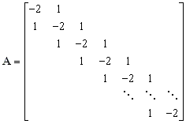 | (113) | |
and both Jacobi and Gauss-Seidel iterations take D as 2I (I is the identity matrix) on the diagonal to give B = D1[A+D] as
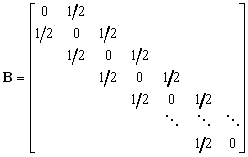 | (114) |
The eigen values l of this matrix are given by the roots of
| (115) | |
In this case the determinant may be obtained using the recurrence relation
| (116) | |
where the subscript gives the size of the matrix B. From this we may see
| (117) | |
| (118) |
It can be shown that for a system of any size following this general form, all the eigen values satisfy |l| < 1, thus proving the relaxation method will always converge. As we increase the number of mesh points, the number of eigen values increases and gradually fills up the range |l| < 1, with the numerically largest eigen values becoming closer to unity. As a result of l1, the convergence of the relaxation method slows considerably for large problems. A similar analysis may be applied to Laplace's equation in two or more dimensions, although the expressions for the determinant and eigen values is correspondingly more complex.
The large eigen values are responsible for decreasing the error over large distances (many mesh points). The multigrid approach enables the solution to converge using a much smaller system of equations and hence smaller eigen values for the larger distances, bypassing the slow convergence of the basic relaxation method.
The analysis of the Jacobi and Gauss-Seidel iterations may be applied equally well to Successive Over Relaxation. The main difference is that D = (2/s)I so that
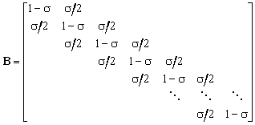 | (119) |
and the corresponding eigen values are related by (1sl)2 equal to the values tabulated above. Thus if s is chosen inappropriately, the eigen values of B will exceed unity and the relaxation method will diverge. On the otherhand, careful choise of s will allow the eigen values of B to be less than those for Jacobi and Gauss-Seidel, thus increasing the rate of convergence.
Relaxation methods may be applied to other differential equations or more general systems of linear equations in a similar manner. As a rule of thumb, the solution will converge if the A matrix is diagonally dominant, i.e. the numerically largest values occur on the diagonal. If this is not the case, SOR can still be used, but it may be necessary to choose s < 1 whereas for Laplace's equation s >= 1 produces a better rate of convergence.
One of the most common ways of solving Laplace's equation is to take the Fourier transform of the equation to convert it into wave number space and there solve the resulting algebraic equations. This conversion process can be very efficient if the Fast Fourier Transform algorithm is used, allowing a solution to be evaluated with O(n log n) operations.
In its simplest form the FFT algorithm requires there to be n = 2p mesh points in the direction(s) to be transformed. The efficiency of the algorithm is achieved by first calculating the transform of pairs of points, then of pairs of transforms, then of pairs of pairs and so on up to the full resolution. The idea is to divide and conquer! Details of the FFT algorithm may be found in any standard text.
The Poisson equation 2f = f(x) may be treated using the same techniques as Laplace's equation. It is simply necessary to set the right-hand side to f, scaled suitably to reflect any scaling in A.
Consider the two-dimensional diffusion equation,
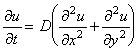 , | (120) | |
subject to u(x,y,t) = 0 on the boundaries x=0,1 and y=0,1. Suppose the initial conditions are u(x,y,t=0) = u0(x,y) and we wish to evaluate the solution for t > 0. We shall explore some of the options for achieving this in the following sections.
One of the simplest and most useful approaches is to discretise the equation in space and then solve a system of (coupled) ordinary differential equations in time in order to calculate the solution. Using a square mesh of step size Dx = Dy = 1/m, and taking the diffusivity D = 1, we may utilise our earlier approximation for the Laplacian operator (equation ( 103 )) to obtain
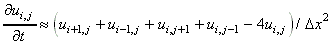 | (121) |
for the internal points i=1,m-1 and j=1,m-1. On the boundaries (i=0,j), (i=m,j), (i,j=0) and (i,j=m) we simply have uij=0. If Uij represents our approximation of u at the mesh points xij, then we must simply solve the (m-1)2 coupled ordinary differential equations
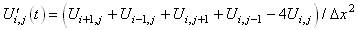 . | (122) | |
In principle we may utilise any of the time stepping algorithms discussed in earlier lectures to solve this system. As we shall see, however, care needs to be taken to ensure the method chosen produces a stable solution.
Applying the Euler method Yn+1 = Yn+Dtf(Yn,tn) to our spatially discretised diffusion equation gives
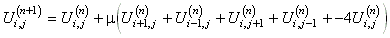 , | (123) | |
where the Courant number
| (124) | |
describes the size of the time step relative to the spatial discretisation. As we shall see, stability of the solution depends on m in contrast to an ordinary differential equation where it is a function of the time step Dt only.
Stability of the Euler method solving the diffusion equation may be analysed in a similar way to that for ordinary differential equations. We start by asking the question "does the Euler method converge as t->infinity?" The exact solution will have u -> 0 and the numerical solution must also do this if it is to be stable.
We choose
| (125) | |
for some a and b chosen as multiples of p/m to satisfy u = 0 on the boundaries. Substituting this into ( 123 ) gives
| (126) |
Applying this at consecutive times shows the solution at time tn is
| (127) |
which then requires |1 4m[sin2(a/2) + sin2(b/2)]| < 1 for this to converge as n>infinity. For this to be satisfied for arbitrary a and b we require m < 1/4. Thus we must ensure
| (128) |
A doubling of the spatial resolution therefore requires a factor of four more time steps so overall the expense of the computation increases sixteen-fold.
The analysis for the diffusion equation in one or three dimensions may be computed in a similar manner.
Our analysis of the Euler method for solving the diffusion equation in section 8.3.3 assumed initial conditions of the form sin(kpx/Lx) sin(lpy/Ly) where k,l are integers and Lx, Ly are the dimensions of the domain. In addition to satisfying the boundary conditions, these initial conditions represent a set of orthogonal functions which may be used to construct any arbitrary initial conditions as a Fourier series. Now, since the diffusion equation is linear, and as our stability analysis of the previous section shows the conditions under which the solution for each Fourier mode is stable, we can see that the equation ( 128 ) applies equally for arbitrary initial conditions.
The implicit Crank-Nicholson method is significantly better in terms of stability than the Euler method for ordinary differential equations. For partial differential equations such as the diffusion equation we may analyse this in the same manner as the Euler method of section8.3.3 .
For simplicity, consider the one dimensional diffusion equation
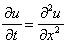 | (129) | |
with u(x=0,t) = u(x=1,t) = 0 and apply the standard spatial discretisation for the curvature term to obtain
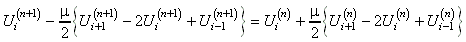 | (130) | |
for the i=1,m internal points. Solution of this expression will involve the solution of a tridiagonal system for this one-dimensional problem.
To test the stability we again choose a Fourier mode. Here we have only one spatial dimension so we use U(0)i = sin(qi) which satisfies the boundary condition if q is a multiple of p. Substituting this into ( 131 ) we find
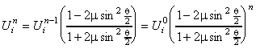 . | (131) | |
Since the term [1-2msin2(q/2)]/ [1+2msin2(q/2)] < 1 for all m > 0, the Crank-Nicholson method is unconditionally stable. The step size Dt may be chosen on the grounds of truncation error independently of Dx.
Start of this section
Title Page
Contents